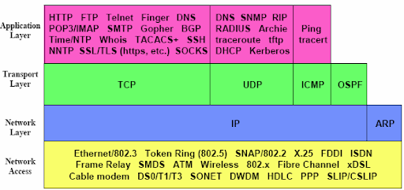
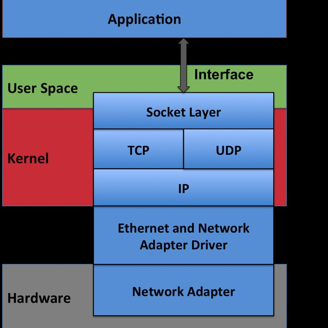
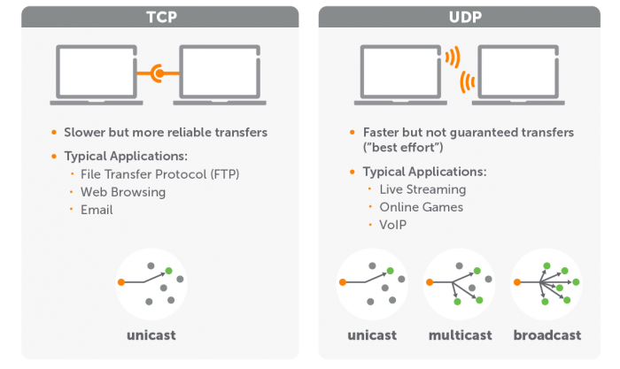
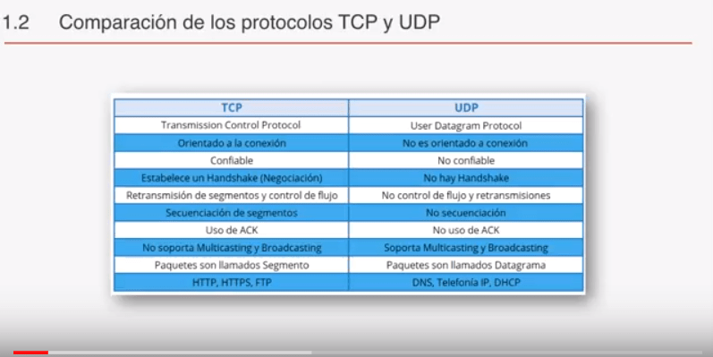

Unidad 4. Programación en red
Índice
Introducción
Hasta ahora hemos visto como varias aplicaciones pueden colaborar entre sí para realizar una tarea de forma conjunta (multiproceso) o bien cómo un mismo programa puede dividir una tarea en partes que se ejecuten de forma concurrente y simultánea (multihilo). Todo esto ocurre dentro de una máquina, bien sea en monoprocesador o multiprocesador, controlados por un mismo SO y compartiendo habitualmente parte de la memoria y de la E/S.
En este tema vamos a ir un paso más allá, vamos a crear aplicaciones que funcionen en entornos distribuidos. Volvemos a tener múltiples procesos en ejecución, pero a diferencia de lo que vimos en el tema 2, en el que los procesos tenían una relación padre-hijo (lanzador-lanzado), ahora los procesos se van a ejecutar en sistemas independientes y se comunicarán a través de la red usando protocolos de comunicación.
Podemos encontrar básicamente dos modelos de sistemas distribuidos:
- Cliente / Servidor: un proceso, denominado
servidor, ofrece servicios a uno o más procesos, denominadosclientes. - Entre iguales (P2P): todos los procesos colaboran de forma similar y con un mismo fin, no existiendo una especialización ni diferenciación entre ellos..
Objetivos
Objetivos de esta unidad:
- Conocer el protocolo TCP/IP, las direcciones usadas en cada capa y y los protocolos asociados.
- Conocer las clases que permiten trabajar con direcciones y nombres de servidores.
- Aprender las características básicas de los protocolos TCP y UDP.
- Desarrollar aplicaciones básicas que se comuniquen usando el protocolo TCP.
- Desarrollar aplicaciones básicas que se comuniquen usando el protocolo UDP.
- Diseñar y programar protocolos para la comunicación entre aplicaciones distribuidas.
- Coordinar la ejecución de múltiples clientes en servidores multihilo.
Pila de protocolos TCP IP
Las capas del modelo TCP/IP
La pila de protocolos TCP/IP, o los protocolos de internet, son un conjunto de protocolos de comunicación usados en la red Internet o en redes similares.
TCP/IP son los protocolos más usados a nivel mundial. Son protocolos abiertos y por ese motivo permiten la comunicación entre máquinas usando diferentes plataformas de hardware y software. Estos protocolos funcionan tanto en redes de área extensa (WAN) como en redes de área local (LAN).
La pila de protocolos TCP/IP es, como hemos dicho, un conjunto de protocolos que reciben su nombre de los dos protocolos más importantes Protocolo de Control de la Transmission(TCP) and the Protocolo de Internet(IP). Además de estos protocolos, la pila TCP/IP incluye muchos otros protocolos de más alto nivel que facilitan la comunicación con aplicaciones como el email, transferencia de archivos, servidores web, etc.
Documentos RFC
Cada protocolo de Internet, junto con sus correcciones y modificaciones posteriores, está descrito en un documento conocido como Request For Comments (RFC).
Aquí se puede consultar la lista de los RFCs disponibles: http://www.ietf.org/rfc.html.
Recibe el nombre de pila o stack porque está diseñado como una jerarquía de capas en las que cada capa da soporte a la capa que tiene por encima y utiliza los servicios de la capa que tiene por debajo. Cada capa está encargada de resolver un subconjunto de los problemas específicos que encontramos cuando queremos realizar una comunicación de datos entre equipos en una red.
El modelo TCP/IP está dividido en cuatro capas. De más bajo nivel a más alto tenemos la capa de enlace de datos (Link), la capa de red (internet), la capa de transporte y la capa de aplicación, tal y como podemos ver en la siguiente imagen.

- La capa de enlace proporciona la comunicación entre dos interfaces o tarjetas de red dentro de una misma red local, con conexión directa o a través de uno o varios switches.
- La capa de red proporciona comunicación entre dos interfaces de red o hosts. Estos hosts pueden estar en la misma red o en redes diferentes, siempre que estén interconectadas por uno o más routers. A cada interfaz de red se le asigna una dirección IP que identifica al equipo de forma unívoca. El protocolo IP es el más importante de esta capa y probablemente sea el más importante de toda la pila de protocolos.
- La capa de transporte se encarga de proporcionar una comunicación punto a punto, permitiendo manejar múltiples transferencias de información de forma simultanea. El protocolo principal de esta capa es el protocolo
TCP, que se encarga de proporcionar un servicio confiable y orientado a conexión.UDPpor su parte proporciona un servicio más eficaz y rápido, pero lo hace de forma no fiable y no orientado a conexión. - La capa de aplicación proporciona servicios específicos de transmisión fiable para un tipo determinado de aplicación (transferencia de archivos, correo electrónico, gestión de red, configuración de red, etc.). Esta capa se encuentra unas veces dentro de las aplicaciones cliente que usamos para acceder a estos servicios y en otras ocasiones como servicios del propio SO. El interfaz entre los protocolos de la capa de aplicación y los protocolos de la capa de transporte se definen como
puertosysockets.

Direcciones y puertos - Sockets
Direcciones IP
Cada host o equipo que está en una red TCP/IP tiene asignada na dirección IP única consistente en un número de red y un número de host. El número de red sirve para identificar la red en la que se encuentran los hosts. El número de host sirve para identificar a un host dentro de una red.
Las direcciones Ipv4 son direcciones de 32-bits. La dirección IP se agrupa en cuatro octetos o bytes (grupos de 8 bits) y se representan usando el valor en notación decimal de cada uno de los bytes, separados por puntos. El valor mínimo para cada octeto es 0 y el valor máximo es 255.
192.168.0.100
127.0.0.1
10.1.100.1
Las direcciones IPv6 está formadas por 64-bits para la dirección de red o prefijo de red, y otros 64 bits para el número de host. Las direcciones IPv6 se escriben como 8 grupos de 4 dígitos hexadecimales separados por el caracter ':'. Un grupo que sólo tiene ceros puede ser omitido. Los ceros iniciales también se pueden omitir
Todas estas direcciones serían equivalentes. Se les han aplicado diferentes reglas de reducción
2001:0db8:0000:0000:0000:0000:1428:57ab
2001:0db8:0000:0000:0000::1428:57ab
2001:0db8:0:0:0:0:1428:57ab
2001:0db8:0:0::1428:57ab
2001:0db8::1428:57ab
2001:db8::1428:57ab

Puertos
Cuando una aplicación que se est´ejecutando en un equipo quiere comunicarse con otra aplicación de otro equipo, se identifica a sí misma con un número de 16 bits, que denominamos puerto. Ese identificador es usado por los protocolos de la capa de transporte (TCP or UDP) para entregar los mensajes a la aplicación correcta dentro del equipo.
Los puertos van de 0 a 65535, y se agrupan en tres rangos
| Grupo de puertos | Rango de puertos | Descripción |
|---|---|---|
| Puertos bien conocidos o puertos del sistema | 0 - 1023 | Los usan los protocolos estándar y los servicios del SO |
| Puertos registrados | 1024- 49151 | Reservados por empresas y organizaciones para sus propios servicios |
| Puertos efímeros | 49152 - 65535 | De libre disposición y uso para aplicaciones cliente y servidor |
Los servidores de protocolos estándar como Telnet y FTP usan uno o más de estos puertos bien conocidos. La mayoría de los servidores sólo utilizan un puerto aunque hay otros, como FTP, que usan dos. El uso de un puerto específico permite a las aplicaciones cliente el poder comunicarse con el servidor sin tener que enviar una petición previa para determinar qué puerto se está usando.
Por ejemplo, las peticiones HTTP se envían por defecto al puerto 80 del servidor..
Las aplicaciones cliente (navegadores, clientes de correo, etc) no necesitan usar uno de los puertos bien conocidos ya que son los que inician la comunicación. A los procesos cliente se les asigna un número de puerto de forma dinámica por parte del SO. Ese número está incluido en todos los datagramas que intercambia con el servidor, por lo tanto el servidor tiene acceso a esa información.
Sockets
Un socket es básicamente un punto final de conexión en una comunicación entre proceso y está formado por una combinación unica de dirección IP, puerto y protocolo de transporte (normalmente TCP).
Cuando una aplicación cliente quiere comunicarse con un servidor, el SO crea el socket que usará el cliente para recibir la información del servidor. lA combinación única de Protocolo + puerto + IP permite que este extremo de la comunicación sea accesible desde el servidor, de manera inequívoca y asegura que los datos los recibe el proceso que los solicitó.
El servidor tiene su propio socket par comunicarse con el cliente, y una conexión establecida entre el cliente y el servidor usando los dos extremos (los dos sockets cliente <--> servidor. Las aplicaciones intercambian información escribiendo o leyendo en los sockets que han creado..
La conexión usada por un cliente está formada por dos sockets, uno en el lado del cliente y otro en el lado des servidor. Por lo tanto, la conexión puede identificarse con una tupla formada por cuatro número: la dirección IP de origen, la dirección IP de destino, el puerto de origen y el puerto de destino.
Esto permite que múltiples aplicaciones cliente ejecutándose en máquinas diferentes puedan conectarse al mismo socket de destino en el servidor. Tampoco hay confusión de a qué equipo se debe enviar un datagram de respuesta, incluso si el puerto de origen y destino es el mismo.
Usando sockets también es posible tener varias aplicaciones cliente corriendo en el mismo equipo y conectándose al mismo servidor (varias pestañas de un navegador). Los datagramas de respuesta enviados por el servidor al cliente contienen la información del socket en el lado del client, la cual incluye el puerto asignado individualmente a cada uno de los clientes, no pudiendo haber confusión sobre a qué proceso entregar la respuesta.

En una red, la comunicación real se realiza de una capa a la siguiente o a la anterior. Sin embargo, las aplicaciones de cada capa realizan una abstracción de las capas inferiores y ven su flujo de comunicación como una comunicación directa con la capa equivalente en el otro extremo de la conexión.
En la pila de protocolos TCP/IP se manejan diferentes elementos de información en cada nivel (frames, packets, datagramas, streams, messages, ...).

Como ya se ha citando anteriormente, los sockets son el puente entre la capa de transporte y la capa de aplicación. Este es el punto donde vamos a trabajar y desarrollar nuestras aplicaciones en este tema, ofreciendo servicios a los protocolos de la capa superior, la capa de aplicación.
TCP vs UDP
El protocolo TCP que es el más utilizado en la navegación cotidiana. Es el más habitual por tratarse de un protocolo de transporte ‘orientado a conexión’. Esto quiere decir que el protocolo TCP está diseñado no solo para transmitir una determinada información entre un dispositivo y otro, sino también para verificar la correcta recepción de la información transmitida entre un dispositivo y otro, o, dicho de otro modo, es un protocolo para manejar conexiones de extremo a extremo.
El protocolo TCP establece una conexión entre el dispositivo emisor y el dispositivo receptor y verifica de forma continua la emisión y recepción de la información entre ambos. El protocolo TCP consigue esta verificación dividiendo los flujos de bytes en segmentos ordenados con un número de secuencia antes de transmitirlos a través del protocolo IP. Este número de secuencia es verificado por el dispositivo receptor y, en caso de que falte alguno de los segmentos, el protocolo TCP vuelve a solicitar su envío a través del protocolo IP, hasta que el mensaje llega en su totalidad al dispositivo receptor. Gracias a su fiabilidad, el protocolo TCP da soporte a los protocolos HTTP, SMTP, SSH y FTP.
El protocolo TCP ofrece los siguientes servicios :
- Comunicación Full duplex: los dos extremos pueden transmitir simultaneamente
- Timing: Utiliza temporizadores para asegurar que los datos se transmiten de forma síncrona
- Secuenciación: Los bloques se transmiten con un número de secuencia para que puedan ser reensamblados en el destino, en orden correcto, antes de pasarlos al protocolo de la capa de aplicación.
- Control de flujo: Se encarga de gestionar el congestión y adaptar la velocidad de envío / recepción de bloques.
- Gestión de errores: Usa comprobaciones checksum para detectar posibles errores en la transmisión de los datos y gestionar dichos errores.

El protocolo UDP funciona de manera similar al protocolo TCP, pero no es un protocolo de transporte orientado a conexión. Esto quiere decir que el protocolo UDP no verifica la recepción de los datos transmitidos entre un dispositivo y otro. Por esto, se articula en un nivel de capa inferior al protocolo TCP, con lo que el sistema de verificación de la recepción de los datos debe implementarse en las capas superiores.
La principal ventaja del protocolo UDP consiste en su velocidad. Al prescindir de un sistema de verificación de ida y vuelta entre el dispositivo emisor y el dispositivo receptor, el protocolo UDP permite una velocidad de transferencia superior a la del protocolo TCP. Por esto, el protocolo UDP es el más utilizado por los servicios de transmisión de voz o vídeo en streaming, donde la velocidad de la transmisión es más importante que una posible pérdida de datos puntual.
Cabe destacar su uso especializado para transmisiones de tipo multicast y broadcast.
